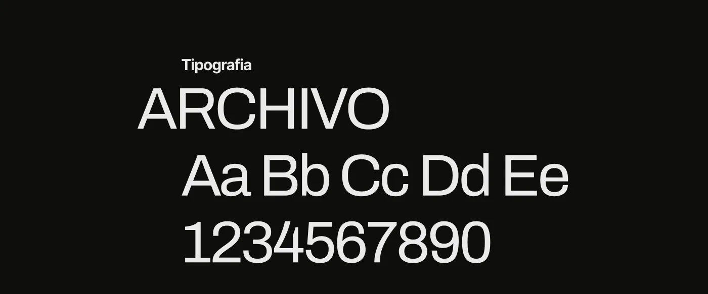

[Parágrafo de abertura: apresente a ideia central e responda com clareza à pergunta da matéria.]
[Desenvolva o contexto em parágrafos focados, com uma ideia principal em cada um.]
[Subtítulo da primeira seção]
[Explique o primeiro ponto com exemplos ou detalhes que ajudem o leitor.]
[Continue a explicação e prepare a transição para a imagem ou próxima seção.]

[Retome a leitura após a imagem e conecte-a ao argumento da matéria.]
[Subtítulo da próxima seção]
[Adicione aqui os próximos parágrafos. Duplique o bloco de imagem sempre que uma nova figura fizer parte do conteúdo.]